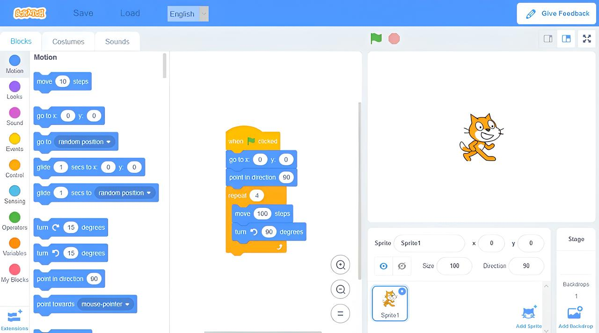
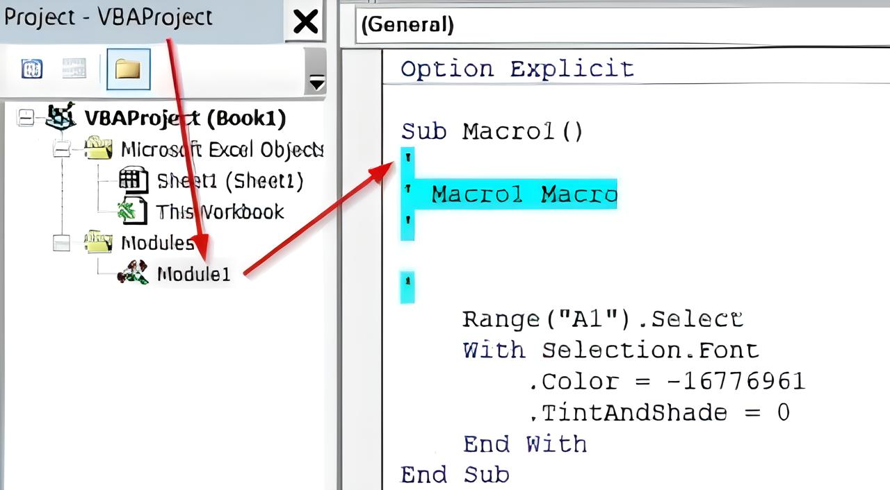
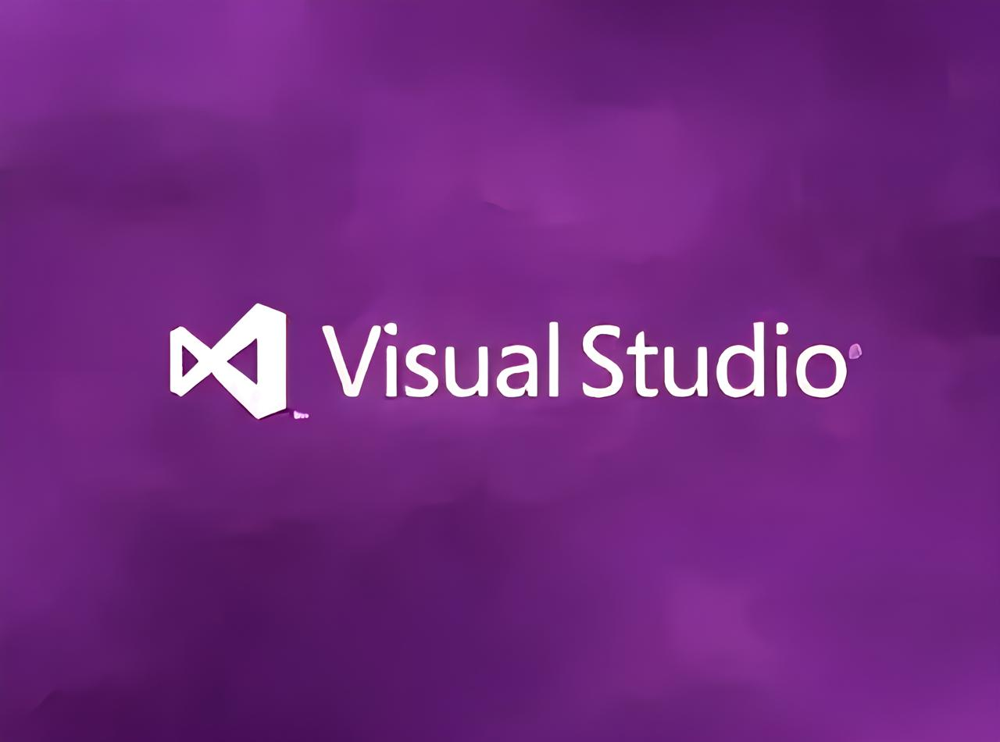

¿Qué es la Programación?
La programación es el proceso de escribir instrucciones que las computadoras pueden seguir para realizar tareas específicas. Es fundamental en el desarrollo de software, automatización y resolución de problemas complejos.
Breve historia de la programación
La programación comenzó en el siglo XIX con Ada Lovelace, considerada la primera programadora. A lo largo del tiempo, han surgido lenguajes como COBOL, C, Python y Java, cada uno con un enfoque específico para resolver problemas del mundo real.
- 1950s: Fortran y COBOL.
- 1970s: C, Pascal.
- 1990s: Java, PHP.
- Actualidad: Python, Kotlin, Go, Swift.
Programación e Inteligencia Artificial
Hoy en día, la programación es clave en el desarrollo de inteligencia artificial (IA). Gracias a lenguajes como Python y librerías como TensorFlow, es posible entrenar máquinas para que reconozcan patrones, hablen o incluso jueguen videojuegos mejor que los humanos.
Consejos para aprender a programar
- Empieza con proyectos pequeños y prácticos.
- No te frustres con los errores, aprende de ellos.
- Lee código de otros para mejorar tu lógica.
- Participa en comunidades como GitHub o Stack Overflow.
- Practica todos los días, aunque sea poco.
Herramientas útiles para programadores
- Git: Control de versiones para manejar tus proyectos.
- VS Code: Editor de código moderno, ligero y poderoso.
- Figma: Para diseñar interfaces antes de programar.
- Stack Overflow: Comunidad para resolver dudas técnicas.
- ChatGPT: Asistente para resolver problemas de programación.
Áreas donde podés aplicar la programación
- Desarrollo web: Sitios y aplicaciones online.
- Desarrollo móvil: Apps para Android o iOS.
- Videojuegos: Programación en motores como Unity.
- Ciberseguridad: Proteger sistemas informáticos.
- Análisis de datos: Usar código para descubrir patrones y tomar decisiones.
Scratch
Scratch es una herramienta de programación visual ideal para principiantes. Usa bloques que se arrastran para construir programas como juegos o animaciones.

- Lenguaje visual por bloques
- Ideal para niños y principiantes
- Proyectos como cuentos, juegos y simulaciones
Excel con Macros (VBA)
Las macros en Excel permiten automatizar tareas repetitivas. Se programan con Visual Basic for Applications (VBA) y son muy útiles para crear formularios o reportes automáticos.

Sub Saludar()
MsgBox "¡Hola desde Excel!"
End Sub
| Tarea | Automatizable con Macros |
|---|
| Generar reportes | Sí |
| Enviar correos | Sí |
| Editar imágenes | No |
Visual Studio (Visual Basic)
Visual Studio es un entorno profesional de desarrollo. Con Visual Basic podés crear aplicaciones de escritorio con interfaces gráficas y funcionalidades avanzadas.

Public Class Form1
Private Sub btnSaludo_Click(sender As Object, e As EventArgs) Handles btnSaludo.Click
MessageBox.Show("¡Hola, mundo!")
End Sub
End Class
Comparación entre herramientas
| Herramienta |
Dificultad |
Propósito |
| Scratch |
Fácil |
Aprendizaje básico |
| Excel (VBA) |
Media |
Automatización de tareas |
| Visual Studio |
Avanzada |
Aplicaciones profesionales |
¿Por qué es importante aprender a programar?
- Desarrolla el pensamiento lógico y la resolución de problemas.
- Permite crear aplicaciones, páginas web, videojuegos y más.
- Es una habilidad muy demandada en el mundo laboral.
- Facilita la automatización de tareas repetitivas.
- Abre la puerta al desarrollo de inteligencia artificial y software avanzado.
Tipos de lenguajes de programación
- Lenguajes de alto nivel: Fáciles de entender y escribir. Ejemplos:
Python, Java, PHP.
- Lenguajes de bajo nivel: Más cercanos al lenguaje máquina. Ejemplo:
Ensablador.
- Lenguajes orientados a objetos: Basados en clases y objetos. Ejemplo:
C++, Java.
- Lenguajes interpretados: Se ejecutan línea por línea. Ejemplo:
Python, JavaScript.
- Lenguajes compilados: Se traducen completamente antes de ejecutarse. Ejemplo:
C, C++.
Habilidades que desarrolla un programador
- Pensamiento lógico y analítico.
- Capacidad para trabajar en equipo.
- Dominio de algoritmos y estructuras de datos.
- Conocimiento de bases de datos y redes.
- Habilidad para aprender nuevas tecnologías.
Conclusión
Dominar diferentes herramientas de programación como Scratch, Excel y Visual Studio te permite resolver problemas desde lo más básico hasta lo profesional. La clave está en practicar y experimentar con cada una.